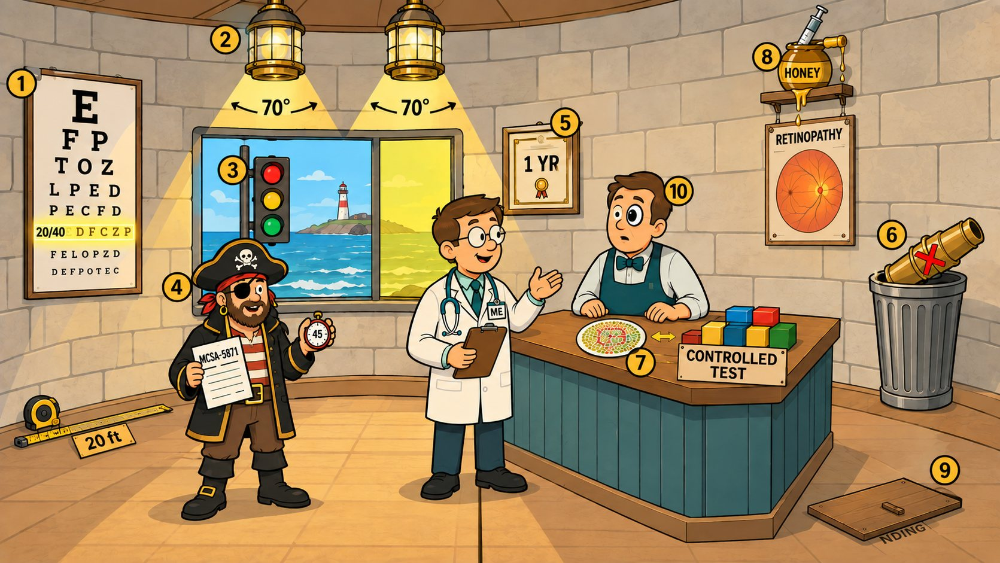

Card 2 of 13 · 49 CFR 391.41(b)(10) · 391.44
The 20-70-3 Lighthouse Optometrist
Vision — 20/40 in each eye, 70° fields, signal colors, the Alternative Vision Standard and MCSA-5871.

0:00 / 0:00
Press play — the narrator walks the scene and the spotlight follows to each numbered object. Click any paragraph to jump there. Space play/pause · ←/→ previous/next object · [/] previous/next card.
Not started — press play, then try the questions.
What this card covers
Vision — 20/40 in each eye, 70° fields, signal colors, the Alternative Vision Standard and MCSA-5871. Standard: 49 CFR 391.41(b)(10) · 391.44.
The hooks to keep
- 20/40 each eye at 20 feet
- 70 degrees per eye
- Red, amber, green
- MCSA-5871 within 45 days; one-year certificate
- Telescopic lenses go in the trash
- Insulin plus proliferative retinopathy is the only automatic eye disqualification
Test yourself
9 questions on this card
Answer each question to see the explanation, its sources, and the cheat-sheet entry.